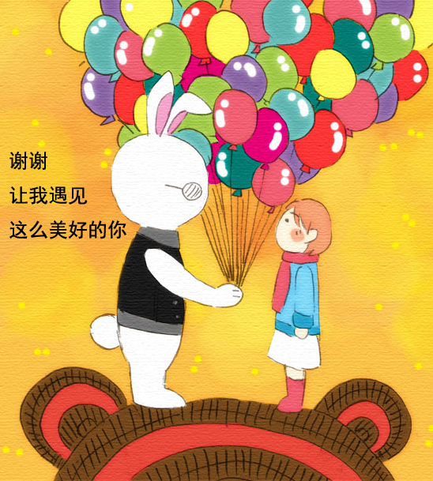
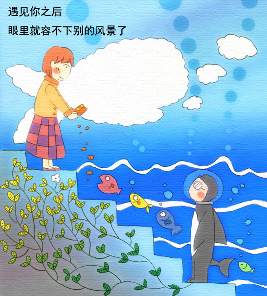
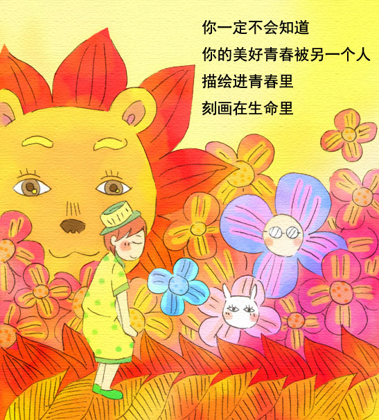
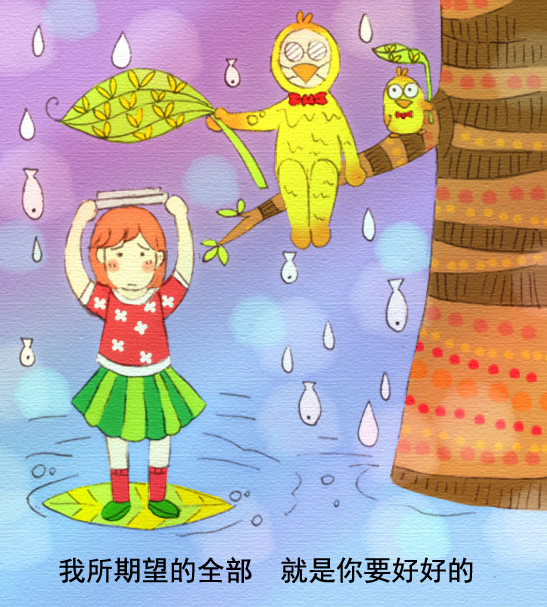
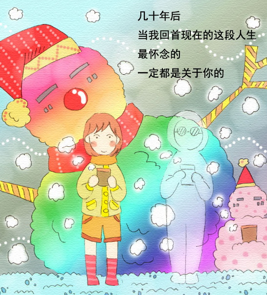
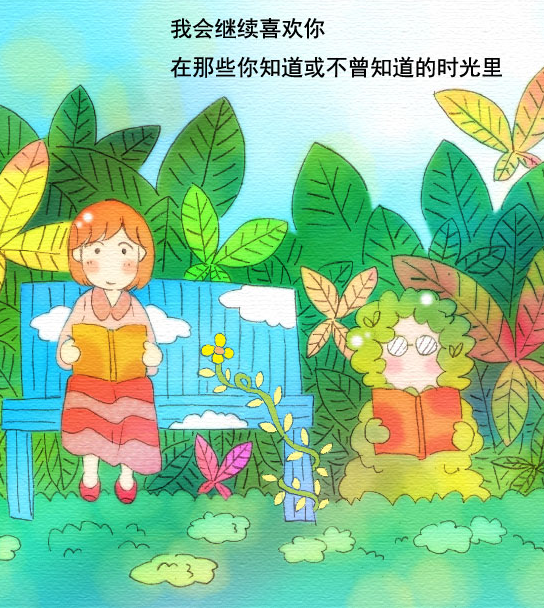
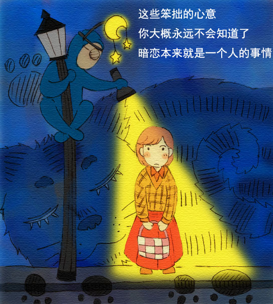
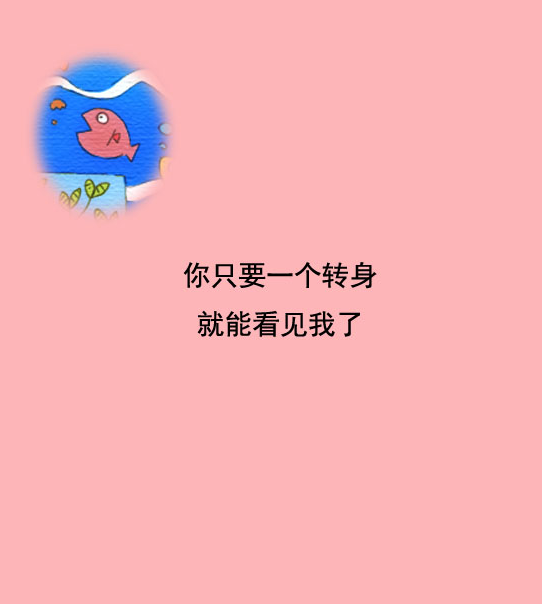

my heart world.
记得第一次看到你那是大二快期末，利鹏带着你来到实验室的门口。当时看到你，我感觉很清新，又带着点羞涩，忍不住多看了一眼。

但是，就因为多看了的这一眼，这个印记刻在脑海里挥之不去了，在次之后，总是忍不会住的想往你那个方向瞅瞅，久而久之，就对你产生了一种感觉。我意识到，我已经喜欢上你了。

看到你的一颦一笑，我就像打了兴奋剂一样不由得心跳加速。尤其是在偶遇的时候，远远的看见你走过来，既兴奋，又害怕，兴奋呀又可以见到你，害怕不知道说些什么，最终只能憋出个hi...。然后兴奋着懊悔自己的语死早。

机智的利鹏看出了些端倪，我也想从他那多了解了解关于你的事，也就跟他坦白了，拜托他出出主意，利鹏说他帮我问问。之后利鹏劝我放弃，我也就猜到个八九不离十。躺在床上，想着利鹏跟我说的话，想着自己真的早放弃么，想着今后该怎么办，就这么呆呆的想了一晚上。

喜欢一个人，就算收不到回报也无所谓。能够看到她很开心就足够了。实验室分组的时候我便自告奋勇的申请带你，这也是我所力所能及能够帮到你的事了。

大三的时候我感觉到想有更进一步的发展很难，寒假的时候便劝自己放弃，qq被盗后强迫自己不联系你，想让时间冲淡这份心中的这份感情。但事实是我想多了，当我再次看到你的时候，我感觉我是多么的逗比

马上都要大四了，我还是和当初那样不善言辞，大四意味着将要离开，把话说出来，害怕最终做普通朋友都很尴尬，我到底是在畏惧些什么。再不说出心里想说的话，那将是多么大的遗憾，所以我选择在这个日子，这种用方式，向你表达心中的情感。

你愿意陪我一起过七夕节么？
